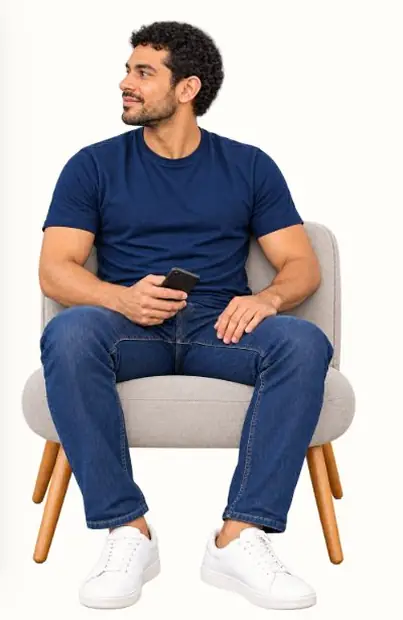
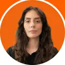

Objetivo
Começar pela intenção humana, não pelo catálogo do banco.
Batalha de Agentes · 2026 · PoC + refinamento posterior
Em dois dias, transformamos dados em uma ideia de produto. Depois, voltamos ao protótipo para fazer o que faltava: tornar as decisões mais claras para as pessoas.
Comece pelo seu objetivo.

01 / Descoberta · base sintética
Analisamos uma base sintética com 1.000 usuários. Saldo, dívida formal e uso do rotativo ajudaram a separar comportamentos. Uma relação mudou a pergunta de produto.
O uso do rotativo apareceu mesmo sem saldo negativo. Não era prova sobre uma população — era um sinal suficiente para mudar o enquadramento: antes de pensar no quanto guardar, precisamos entender o que já compete com o objetivo.
Fernando, 30 anos
A pergunta anterior: o que já compete com esse objetivo?
02 / A pessoa por trás do problema
Fernando é a lente narrativa do case — não um cliente real. O saldo pode parecer saudável enquanto juros e compromissos já consomem parte do dinheiro disponível.
A proposta da Bússola começa pelo objetivo, mas não pula direto para uma oferta. Primeiro vem o que a decisão precisa tornar visível.
03 / Do sinal ao produto
A descoberta virou uma regra de produto: começar pelo que a pessoa quer realizar, compreender a pressão financeira, comparar cenários e tornar o consentimento explícito antes de qualquer ação sensível.
Começar pela intenção humana, não pelo catálogo do banco.
Entender renda, compromissos e sinais que o saldo sozinho não explica.
Traduzir prazo, esforço e alternativas em linguagem comparável.
Deixar o trade-off visível antes da escolha.
Dizer o que será feito — e o que não será.
04 / O que construímos
A documentação do projeto combina interface conversacional, Gemini + ADK, MCP, BigQuery, RAG e controles de segurança. O diagrama abaixo é uma leitura editorial fiel da arquitetura de referência — não uma afirmação de que todos os componentes foram validados em produção.
05 / Evolução de UX · depois do hackathon
A revisão posterior não tenta reescrever a história do evento. Ela mostra quatro decisões de UX e conteúdo que ficaram mais claras quando o protótipo foi tratado como experiência, não apenas como demonstração funcional.
Menos apresentação. Mais clareza sobre o primeiro passo.
Eu sou a Bússola, seu assistente financeiro. Qual objetivo você quer tirar do papel? Vou analisar, simular, recomendar e acompanhar seus próximos passos.
Oi, Fernando.
Comece pelo seu objetivo.
O percentual parecia simples, mas escondia o que precisaria mudar.
80% da sobra
por mês · 19 meses
por mês · 19 meses
O botão deixa de ser um verbo solto e passa a nomear a finalidade.
Contraste, foco e hierarquia também fazem parte da decisão.
Informações distribuídas em vários níveis visuais, com chamada pouco distinguível do fundo.
Próximo passo
Confira o valor e escolha como continuar.
06 / Experimente a PoC
A versão demonstrativa usa dados sintéticos, não realiza operações bancárias reais e não está pronta para uso financeiro em produção.
Abrir protótipo em nova aba ↗Em telas pequenas, a experiência abre em uma página própria para preservar espaço, foco e navegação.
Experimentar Bússola ↗07 / Quem construiu
O case distingue a entrega do hackathon do refinamento posterior. As contribuições abaixo se apoiam nos materiais do projeto e no histórico público do repositório — sem transformar os créditos em uma página de liderança.
Estratégia de produto e construção das personas usadas para enquadrar a jornada.
LinkedIn ↗Estratégia, contexto, pesquisa, Responsible AI e narrativa; refinamento posterior de UX e conteúdo no fork.
LinkedIn ↗
Agente, contratos e deploy, com evidências no histórico técnico do projeto.
LinkedIn ↗Arquitetura, integração, RAG, governança e BigQuery; origem e liderança do repositório técnico.
LinkedIn ↗
Ciência de dados, crédito e desenvolvimento de produtos orientados por dados.
LinkedIn ↗08 / O que este case prova
A Bússola nasceu como uma prova de conceito coletiva. Ainda há hipóteses e capacidades por validar: eficácia das recomendações, revogação real de consentimento e testes assistivos completos, entre outras.
O valor deste case está menos em apresentar um produto “pronto” e mais em tornar visível o raciocínio: como um sinal virou hipótese de produto, como a equipe prototipou e como decisões de UX e conteúdo foram revisitadas depois.
Case independente de hackathon, sem endosso oficial. A base de 1.000 perfis é sintética. Fernando é uma persona narrativa e sua imagem foi gerada com IA. Os estados de interface do antes/depois são reconstituições editoriais. A arquitetura mostra capacidades documentadas ou experimentadas na PoC, não uma implementação certificada em produção. Não publicamos os percentuais retidos da base do evento. Resultados financeiros e conformidade assistiva completa não são reivindicados.